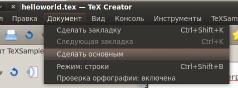

[Назад: 3. Дополнительные функции]
[Далее: 3.2. Прочее]
Основной документ и закладки
Основной документ
Концепция основного документа предполагает, что вы работаете с несколькими документами, но компилируется только один
из них (основной), а остальные лишь включаются в него (с помощью команды \input). Такой подход позволяет
выполнять запуск компиляции без необходимости переключаться на нужный документ. Достаточно лишь указать, какой из
документов является основным, и TeX Creator будет автоматически компилировать только его. Просмотр .pdf или .ps файлов
при наличии основного документа также осуществляется именно для него, а не для текущего документа.
Чтобы сделать текущий документ основным, воспользуйтесь пунктом Сделать основным меню Документ:

либо нажмите соответствующую кнопку на панели инструментов:
Если другой документ уже был назначен основным, то эта кнопка будет выглядеть несколько иначе:
Чтобы убрать с документа отметку "основной", выберите этот документ и воспользуйтесь пунктом Убрать основной
меню Документ, либо нажмите соответствующую кнопку на панели инструметнов:
Закладки
Закладки в TeX Creator похожи на обычные книжные закладки: вы помечаете строку, чтобы в дальнейшем быстро к ней
перейти. В каждом документе можно сделать до 4 закладок. Наиболее старая закладка удаляется, если добавляется более 4
закладок. Переход к закладкам осуществляется циклически, то есть после перехода к последней вы снова перейдете к
первой. При закрытии документа информация о закладках теряется. Закладки ссылаются на номер строки, а не на
содержащийся там текст.
Чтобы сделать закладку на текущей строке, воспользуйтесь пунктом Сделать закладку меню Документ, либо
нажмите соответствующую кнопку на панели инструментов:

либо задействуйте сочетание клавиш Ctrl+Shift+F10.
Чтобы перейти к следующей закладке, воспользуйтесь пунктом Следующая закладка меню Документ, либо
нажмите соответствующую кнопку на панели инструментов:

либо задействуйте сочетание клавиш Ctrl+F10.
[Назад: 3. Дополнительные функции]
[Далее: 3.2. Прочее]